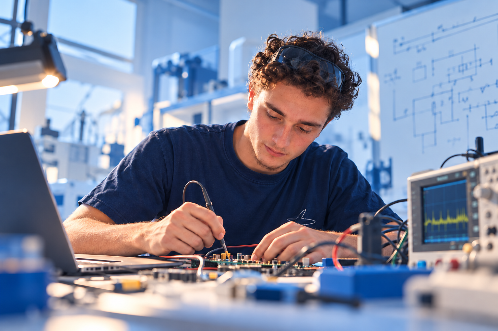

Engineering portfolio · ENSEA
Victor
Correia.
Second-year engineering student at ENSEA.
Curious about electronics, embedded systems and aerospace. My projects range from CAN diagnostics at Air France to Morse radio communication.
- Electronics
- Embedded systems
- Aerospace
CORREIA / MISSION CONTROL
Find the balance.
Ready orbits · choose a departure
Destination confirmed
Prepare your trajectory.Aim the rocket. Gravity shapes the rest of the flight.
Choose an orbit, adjust the arrow, then launch. Reach a project by orbit or landing.
Keyboard: ← → direction · ↑ ↓ thrust · Enter to launch.
Size and mass reflect relative technical difficulty · gravity follows 1/r².
Ready for the next challenge.
I am seeking a four-month internship from late April to late August 2027 in aerospace, electronics or embedded systems, ideally around Porto and northern Portugal.
Projects & experience
Five projects that show how I approach engineering: understand the problem, build a system and learn from testing it.
Air France Industries
CAN test device
During my one-month internship in Orly, I studied an aircraft Power Distribution Unit and developed a CAN diagnostic prototype. My work combined electrical measurements, embedded software, a 20×4 LCD menu and receive-path debugging.
Morse project
Transmitter / receiver
A six-person project to send Morse over a 433.92 MHz radio link. I worked on processing logic with Tristan. Timing was tested on the prototype; the complete radio-to-display chain still needed integration.
Infrared stereo
audio transmission
Our current project explores sending stereo audio over infrared. I am working on the transmitter and receiver circuits, FM modulation and signal recovery.
Sand avalanche
dynamics
From rotating-drum thresholds to video tracking and the Tac-Tac impact model: an experimental investigation of how sand starts, moves and settles.
A Rafale.
Made of cardboard.
A work in progress, built independently from reclaimed cardboard: my own plans, a craft knife and a hot glue gun. Wings, cockpit and nose are taking shape; landing gear, missiles and a grey finish are still to come.
In action.
Three moments from the sand study: build an experiment, observe the motion and question the model.
01 / Avalanche onset · 14 s
When the slope gives way
Gradually turning the drum tilts the sand surface until an avalanche starts.
02 / Granular flow · 10 s
A steady supply of grains
The hopper releases sand, making the supply into the apparatus visible.
03 / Impact study · 18 s
What happens at impact?
A ball is released onto the apparatus: observing its motion before and after contact helps study restitution at impact.
Curious. Practical. Persistent.
I like understanding how a system behaves in the real world and improving it through measurements and prototypes. My work at ENSEA and Air France has strengthened my interest in embedded engineering for aerospace.
I have family in northern Portugal and would be excited to contribute to a team in the Porto region.
Skills, with evidence
Engineering stack
Follow each skill to the project where I put it into practice.
- CAN / ArduinoAir France PDU · Electronics, communication and receive-path debugging.
- Embedded C / STM32 / CRC-8Morse team project · Processing logic with Tristan, timing tests and a standalone CRC-8 routine.
- Analog electronics / FM & PLL / Signal processingInfrared audio · Transmitter, receiver and signal recovery. Work in progress.
- Python / NumPy / MatplotlibSand study · Video tracking, data analysis and comparison with a model.
Let’s build something useful.
I’m looking for a four-month internship in aerospace, electronics or embedded systems from late April to late August 2027.
Connect on LinkedIn